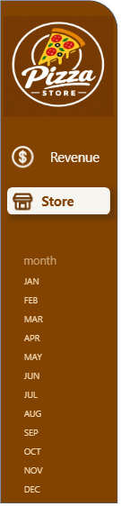
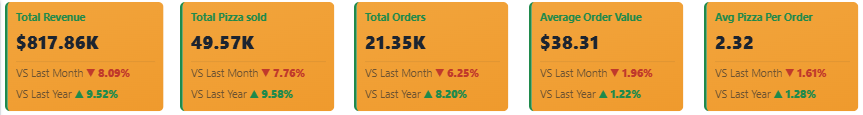
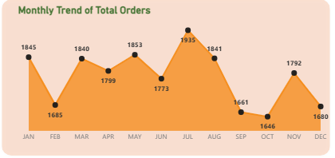
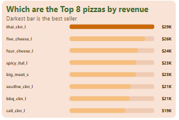
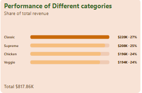
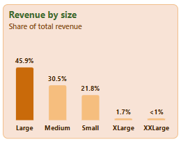
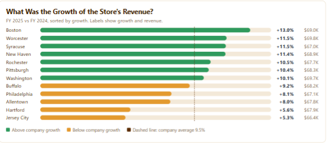
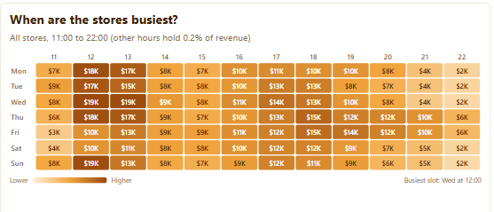
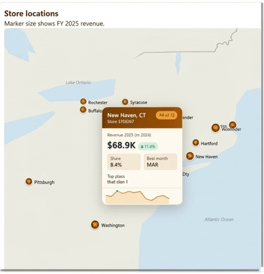

A pizza chain's 2025 sales, read against 2024
A two-page Power BI report on revenue and store performance. It starts with two flat files, goes through a star schema, and ends in custom visuals built with DAX.


Introduction
This project tracks the sales of a pizza business with 12 stores during 2025 and compares every number with 2024. The report has two pages. The Revenue page shows how the whole business is doing, and the Store page shows how each store is doing.
I took it from two flat files all the way to a finished report, so this page walks through each step in the order it happened: loading, cleansing, modelling, writing the measures, building the visuals, and the recommendations that came out of the numbers.
Problem statement
A business with several stores needs one place to see how it is performing. The questions are simple to ask and slow to answer from a spreadsheet. Are we growing? Which stores are pulling ahead and which are falling behind? What sells, and when are we busiest?
The report had to answer these at a glance, focus on 2025, and always show how each number compares with last month and last year.
Data sourcing
The data came as two flat tables, one for 2024 sales and one for2025 sales. Both have the same 18 columns, including order ID, date and time, pizza name, size, category, ingredients, quantity, unit and total price, and the store's ID, city, state and coordinates.
This is sample data.
Loading and cleansing
I loaded both files into Power BI and did the preparation in Power Query. Everything below was done before any visual was built.
- 1Loaded both files as staging tables. Each year stayed in its own table first, so I could check one against the other.
- 2Dropped columns I did not need. A narrower table loads faster and keeps the model small.
- 3Changed data types. Dates, times, prices and quantities were converted so they could be summed, sorted and filtered properly.
- 4Trimmed and standardised the text. Names, sizes and categories were made consistent so the same pizza never appears twice under two spellings.
- 5Appended 2024 and 2025. The two tables were combined into one staging table, which feeds the rest of the model.

Data model
Instead of working from one wide table, I split the combined data into a star schema. fact_order sits in the middle with one row per order line. Around it are dim_pizza (category, size, name, price), dim_location (store, city, state, coordinates) and dim_Date, a proper date table that covers both years.
Each dimension connects to the fact table with a one-to-many relationship. This keeps the model light and makes filters behave. Every slicer is built from a dimension table, so when I need a measure to look at a different month or year, it can clear the filter cleanly.

Enrichment and DAX
With the model in place I added what the visuals needed. In fact_order I created columns for the order hour, the day name, a short day name and the month number. These power the day-of-week chart and the hour-by-day heatmap.
Then came the measures. I started with the basics: total revenue, total orders, pizzas sold, average order value and average pizzas per order. Each KPI also needed two comparisons, so I wrote a vs last month and a vs last year version of every one.
The tricky part was January. A normal "previous month" measure has nothing to compare with, so January looks back to December 2024. Because the date table covers both years, the measure simply finds the month before the selected one, whichever year it falls in.
Revenue Last Month =
VAR _first = MIN ( dim_Date[Date] )
VAR _start = EOMONTH ( _first, -2 ) + 1
VAR _end = EOMONTH ( _first, -1 )
RETURN
CALCULATE (
[Total Revenue],
REMOVEFILTERS ( dim_Date ),
DATESBETWEEN ( dim_Date[Date], _start, _end )
)
A simplified version of the idea, for a selected month
The report only analyses 2025, but the year-on-year numbers still need 2024. So each comparison calculates the year it needs explicitly instead of relying on the page filter.
Building the visuals
The cards, the growth chart, the heatmap and the map are HTML Content visuals. Each one is a DAX measure that builds its own HTML from the model, so nothing is typed in by hand(hard Coded). When a slicer changes, the numbers, colours and bar lengths change with it. Positive changes show in green and negative ones in red.
The month slicers are native Power BI slicer styled to match the brown sidebar, and the sidebar buttons switch between the two pages.

What the report shows
Finding 1
Overall performance
The business grew 9.52% on last year, and almost all of that came from more orders (up 8.20%) rather than bigger ones. The average order value rose only 1.22%, and customers still buy about 2.32 pizzas per order.
In the default view, every card is also down against the previous month. Revenue is down 8.09%, so the business ended the year softer than it grew over it.

Finding 2
Weekly and monthly rhythm
At 3,500 Thursday has the most orders and Saturday with 2,600 has the least . A pizza business with its weakest day on a Saturday is worth a closer look.
Monthly orders peak in July (1,935) and fall away through autumn, reaching their lowest in October (1,646) before a small recovery in November.


Finding 3
What sells
Seven of the top eight pizzas are large, and large pizzas bring in 45.9% of all revenue. Medium adds 30.5% and small 21.8%. The extra-large and double extra-large sizes together earn under 3%.
The four categories are close. Classic leads with $220K (27%), followed by Supreme, Chicken and Veggie, each between 24% and 25%. No category carries the business on its own.



Finding 4
Store growth
Seven stores grew faster than the company average of 9.5%: Boston, Worcester, Syracuse, New Haven, Rochester, Pittsburgh and Washington. The other five fell below it. Buffalo (+9.2%) is only just under the line, while Allentown (+6.0%), Hartford (+5.6%) and Jersey City (+5.3%) are well behind.
Revenue is almost the same in every store, between $66K and $70K. The growth rate, not the size of the store, is what separates them.

Finding 5
Busiest hours
The darkest cells sit at 12:00 and 13:00 on every day, with slots of $16K to $19K on most days. There is a quiet patch from 14:00 to 15:00, a second lift from 17:00 to 19:00, and a steep fall after 20:00 on most days. Friday is the exception, with evenings that stay strong.
Orders outside 11:00 to 22:00 add up to only 0.2% of revenue, so the stores are already open at the right times.

Finding 6
Store locations
The map sizes each marker by its 2025 revenue. Most of the stores sit along the north-east corridor, between Boston and Washington. Pittsburgh is the one inland store to the west. Buffalo, Rochester and Syracuse cover upstate New York.

Recommendations
Staff for lunch and early evening
We should put the strongest crews and the most prep into 12:00 to 13:00 and 17:00 to 19:00. Trim hours after 20:00 on the days where slots fall to $2K to $4K, and keep Friday evenings fully staffed.
Lift Allentown, Hartford and Jersey City
These three grew about half as fast as the company, between 5.3% and 6.0%. Comparing their lunch and evening sales with Boston's, which grew 13.0%, and test local offers before changing anything bigger.
Introduce an offer on Saturday
Saturday earns $99K against Thursday's $136K. A weekend bundle or a family deal would test whether the gap is demand or just a lack of offers.
Grow the order, not only the count
Growth came from more orders while the average order rose just by 1.22%. Add-ons, sides and "two for" bundles could move the 2.32 pizzas per order and lift the average order value.
Review the extra-large sizes and the bottom of the menu
XL and XXL together earn under 3% of revenue, and large pizzas earn 46%. We should Check whether the bigger sizes are worth the stock, and look at the lowest earners, such as Brie Carre, Green Garden and Spinach Supreme, before the next menu change.
Plan ahead before the autumn
Orders slide from August to October, and every card is down on the previous month in the latest view. We can Schedule promotions for September and October so the year does not finish on its weakest months.
Watch and download
A short walkthrough of both report pages, with captions on each visual and a look at how the month slicer changes the numbers. Below it you can download the Power BI file and open the model, measures and visuals yourself.
Download the Power BI report. The .pbix file has the star schema, every DAX measure and both report pages. Open it in Power BI Desktop (free).
Download .pbix